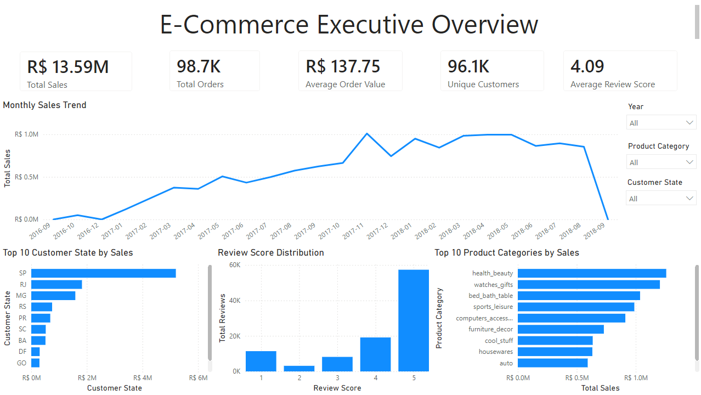
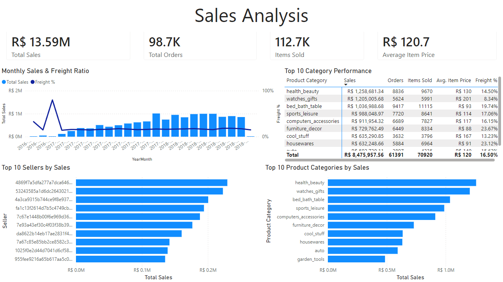
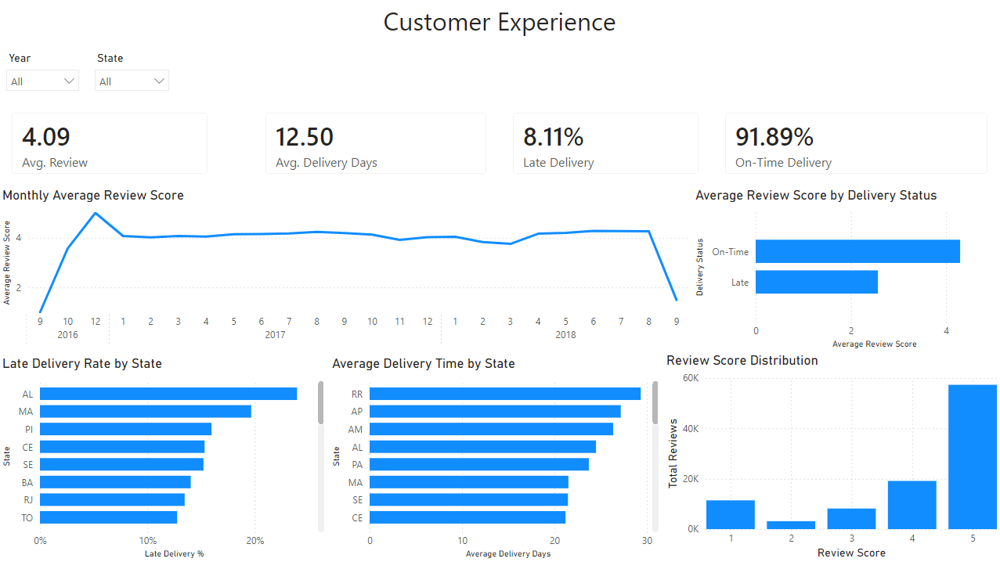

Olist dataset / End-to-end analytics
Brazilian E-Commerce Analytics
From Python data profiling to a star-schema model in Power BI: exploring sales, delivery performance, and customer experience across the Brazilian Olist e-commerce dataset.
- Sales
- Approximately R$13.59M
- Orders
- Approximately 98.7K
- Avg Review / 5
- 4.09
- On-Time
- 91.89%
Dataset overview · Sales and orders are rounded.



Behind the dashboards
From raw data to a clear view.
Profile
Profiled the data with Python before analytical modeling.
Model & explore
Built a star-schema model in Power BI, with Executive Overview, Sales Analysis, and Customer Experience dashboards.
Version
Used PBIP/TMDL to keep the Power BI project under source control with Git.